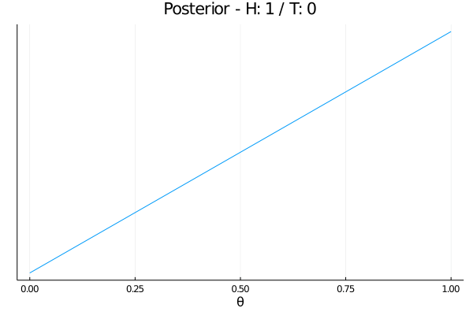

Tom Prescott
A model of how a parameterised real-world system gives rise to measurable data.
Prior distribution on a parameter space: that is, a density function, $\pi(\theta)$, defined for all $\theta \in \Theta$.
Observation(s) in a data space: $\mathrm{x}_{\mathrm{obs}}$
What is the probability density of observing the data, $\mathrm{x}_{\mathrm{obs}}$, as a function of the parameter value? \[ L(\theta) = p(\mathrm{x}_{\mathrm{obs}} ~|~ \theta) \] This is where the model comes in, as $p$.
Posterior distribution, with density, \[ p(\theta~|~\mathrm{x}_{\mathrm{obs}}) \propto L(\theta) \pi(\theta), \] defined on the parameter space, $\theta \in \Theta$.
Model parametrised by the probability, $\theta \in [0,1]$, of tossing a head, $H$.
Uniform prior: $\pi(\theta) = 1$.
Data: $x_{\mathrm{obs}} = (H,T)$.
The likelihood function is binomial: \[ L(\theta) = \binom{H+T}{H} \theta^H (1-\theta)^T \]
The posterior is proportional to the product of prior and likelihood: \[ \pi(\theta~|~H,T) \propto \binom{H+T}{H} \theta^H (1-\theta)^T \times 1 \]
\[ \pi(\theta~|~H,T) \propto \binom{H+T}{H} \theta^H (1-\theta)^T \times 1 \]
What is the probability density of observing the data, $\mathrm{x}_{\mathrm{obs}}$, as a function of the parameter value? \[ L(\theta) = p(\mathrm{x}_{\mathrm{obs}} ~|~ \theta) \]
Is this always a reasonable question?
Assume that the likelihood is unavailable, either analytically or computationally
Then, we need to work with an approximation: \[ \hat L(\theta) \approx p(\mathrm{x}_{\mathrm{obs}} ~|~ \theta) \]
Assume that we can simulate the model under any $\theta \in \Theta$: that is, we can draw a random $x \sim p(\cdot ~|~ \theta)$.
But we cannot calculate $p(x ~|~ \theta)$.
Given $\theta$, I can simulate flipping $N$ coins and say how many were $H$.
But I can't tell you how likely you were to get $H$ heads (and especially $H_{\mathrm{obs}}$ heads) from $N$ flips.
Given $\theta$, I can simulate flipping $N$ coins and say how many were $H$.
And I can do this $M$ times, producing a sample:
\[ H_1, \dots, H_M \sim p(\cdot~|~\theta). \]
The idea of synthetic likelihood is to fit a Normal distribution to this empirical sample.
\[ H_1, \dots, H_M \sim p(\cdot~|~\theta). \]
We fit a Normal distribution $\phi(\cdot~|~\theta)$ with mean and variance, \[ \mu(\theta) = \mathrm{mean}(H_1, \dots, H_M) \\ \Sigma^2(\theta) = \mathrm{var}(H_1, \dots, H_M) \]
The synthetic likelihood of the observed data, $H_{\mathrm{obs}}$, is the likelihood under this empirically fit Normal distribution: \[ L(\theta) \approx \hat L(\theta) = \phi(H_{\mathrm{obs}}~|~\theta) \]
1. Simulate $M$ times and get $x_i \sim p(\cdot~|~\theta)$.
2. Fit $\mu(\theta) = \mathrm{mean}(x_i)$.
3. Fit $\Sigma^2(\theta) = \mathrm{cov}(x_i)$.
4. Calculate synthetic likelihood, \[ \hat L(\theta) = \phi(x_{\mathrm{obs}}~|~\mu(\theta), \Sigma^2(\theta)) \]
Data dimension
Computational expense
Normality assumption
"Throw away" information: make data and simulations just 4D.
1. Final displacement from origin.
2. Final angle made with positive $x$-axis.
3. Average displacement between sample times.
4. Std. dev. of displacement between sample times.
Price et al (2018) "Bayesian Synthetic Likelihood." DOI.
Priddle et al (2019) "Efficient Bayesian synthetic likelihood with whitening transformations." arXiv.
Picchini et al (2020) "Adaptive MCMC for synthetic likelihoods and correlated synthetic likelihoods." arXiv.